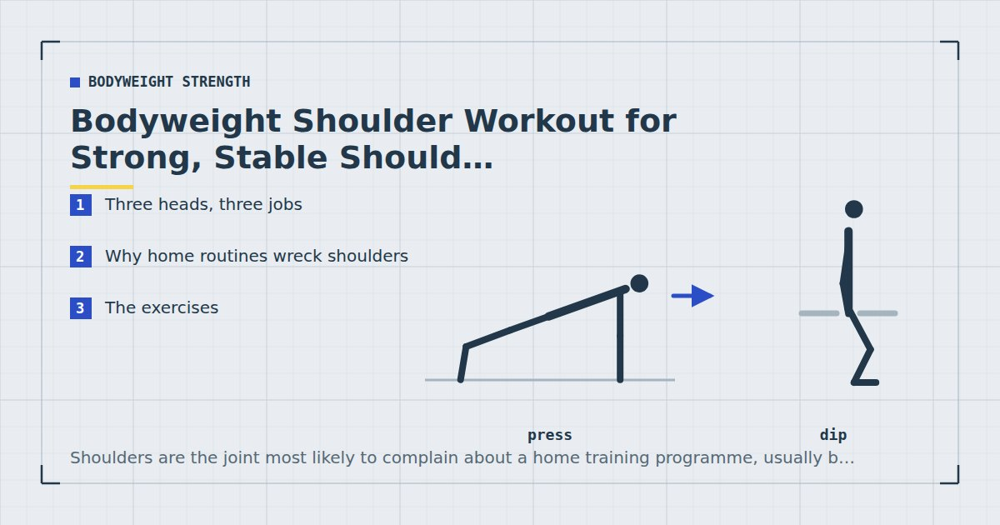

Bodyweight Strength
Bodyweight Shoulder Workout for Strong, Stable Shoulders
Shoulders are the joint most likely to complain about a home training programme, usually because the programme trains one third of them and ignores the rest.

The shoulder is the most mobile joint in the body and consequently the one most dependent on the muscles around it for stability. It is also the joint people most often report problems with after a few months of home training.
The cause is usually not any single exercise. It is that a typical home routine — push-ups, dips, pike push-ups — trains the front of the shoulder heavily, the side moderately, and the back barely at all.
Three heads, three jobs
The deltoid has three portions, and they respond to different movements:
- Anterior (front) — raises the arm forward. Trained by every pressing movement you already do.
- Lateral (side) — raises the arm out to the side. Trained by overhead pressing and lateral raises.
- Posterior (rear) — pulls the arm backward. Trained by rowing and face-pull patterns, which most home routines omit.
Underneath sits the rotator cuff, a group of four smaller muscles that keep the head of the humerus centred in the socket. They are trained mostly by controlled rotational work and by stabilising demands during other exercises.
Why home routines wreck shoulders
Push-ups, dips and pike push-ups all train anterior deltoid. None of them train posterior deltoid meaningfully. Do that three times a week for six months while also spending eight hours a day at a desk with your shoulders rounded forward, and you have a predictable imbalance.
I want to be careful here, because this territory attracts overclaiming. It is not established that muscular imbalance directly causes shoulder pain, and confident assertions to that effect run ahead of the evidence. What is reasonable to say is that a programme covering all three deltoid heads is more complete than one covering one, and that adult activity guidance asks for strengthening work across all major muscle groups rather than a subset.1
The exercises
Pike push-up — the main pressing movement
From a push-up position, walk your feet in and lift your hips high so your body makes an inverted V. Lower the top of your head toward the floor between your hands, then press back up. Elevating the feet on a chair makes it considerably harder and more vertical.
This is the closest bodyweight equivalent to an overhead press and should be the anchor of any shoulder session. Three to four sets of six to twelve.
Wall walk — for the top end
Start in a push-up position with your feet against a wall, then walk your feet up the wall while walking your hands toward it, until you are as close to vertical as you can control. Walk back down.
Demanding, and a good bridge toward handstand work — the full route is in handstand progression for beginners.
Lateral raise with something light
A bag of rice, a water bottle, a resistance band. The lateral deltoid responds to light loads and high repetitions, so improvised weight works genuinely well here. Fifteen to twenty-five repetitions.
Prone Y-T-W raises — rear deltoid and upper back
Lie face down, arms out in a Y shape, and lift them off the floor squeezing the shoulder blades. Then repeat with arms in a T, then in a W. Ten to fifteen of each.
Unimpressive-looking and the most useful thing on this list for anyone with a desk job.
Band pull-apart or face pull
If you own a band, this is the single best rear-deltoid exercise available at home. Hold the band at chest height and pull it apart, squeezing the shoulder blades together. Twenty to thirty repetitions. See the resistance bands guide.
Rows — the foundation
Any rowing variation trains posterior deltoid alongside the back. If you do nothing else on this list, do rows — the options are in rows at home.
The rear deltoid is the muscle nobody trains and everybody needs. It costs five minutes a week.
The session
Warm up first, including some arm circles and a few easy wall push-ups. Rest ninety seconds between sets.
Pike push-up — 4 × 6–12
Feet elevated if the floor version has become manageable. Hardest movement first, while fresh.
Wall walk — 3 × 3–5
Or hold the highest position you can control for fifteen seconds if walking is not there yet.
Lateral raise — 3 × 15–25
Light load, controlled tempo, no swinging.
Band pull-apart or prone Y-T-W — 3 × 15–20
The rear-deltoid work. Do not skip this because it feels easy.
Rows — 3 × 10–15
Included here even though it is a back exercise, because the posterior deltoid needs the volume.
The rear deltoid problem
Worth stating separately because it is the thing most likely to be skipped.
Rear-deltoid work does not feel like training. The loads are light, there is no burn to speak of, and it produces no soreness. Everything about it signals that it is not doing anything, which is exactly why it gets dropped from routines within about three weeks.
The practical fix is to attach it to something else rather than treating it as a separate item. Do a set of band pull-aparts between every set of push-ups. It costs no extra session time, and the volume accumulates without requiring you to decide to do it.
Shoulder health while training
Sharp pain at the front of the shoulder, pain that wakes you at night, pain radiating down the arm, or a sensation of catching or instability are all reasons to see a physiotherapist or your doctor rather than adjusting your technique from an article. Shoulder problems that are trained through tend to become longer problems.
Things that reduce the chance of trouble: keeping pressing and pulling volume roughly balanced, avoiding the extreme bottom range on dips, warming the shoulders up before overhead work, and progressing gradually rather than jumping between variations.
Things that are widely recommended and less well supported: specific "shoulder activation" drills, elaborate mobility routines, and the idea that any one exercise is inherently dangerous. Gradual progression does most of the work.
Programming
Once or twice a week as a dedicated session, or spread across your existing upper-body days. Weekly volume drives adaptation up to a point,2 and roughly ten to sixteen hard sets per week across all three deltoid heads is a reasonable target — noting that push-ups and dips already contribute substantially to the anterior total.
Since load is light, proximity to failure is what produces the stimulus.3 That applies especially to lateral and rear work, where the temptation is to stop at a comfortable number.
Where to go next
For overhead work specifically, see handstand progression for beginners. For the pressing side, see how to build chest muscle without weights.
Frequently asked questions
Can you build shoulders with bodyweight exercises?
Yes. Pike push-ups and wall walks train the front and side deltoids effectively, and rowing plus band or prone raises cover the rear. The main limitation is loading the lateral deltoid, which benefits from even a light improvised weight.
What is the best bodyweight shoulder exercise?
The pike push-up, which is the closest bodyweight equivalent to an overhead press. Elevating the feet makes it more vertical and considerably harder.
Why do my shoulders hurt from push-ups?
Common causes include elbows flaring straight out to the sides, hands placed too far forward, and progressing to harder variations too quickly. Persistent shoulder pain warrants a physiotherapist rather than a form adjustment from an article.
How do I train rear delts at home?
Rowing variations, prone Y-T-W raises lying face down, and band pull-aparts. Band pull-aparts are the most effective and the easiest to add — do a set between every set of push-ups so the volume accumulates without extra session time.
How often should I train shoulders?
Once or twice a week as a dedicated session, or spread across existing upper-body days. Push-ups and dips already contribute substantial front-deltoid volume, so dedicated work should emphasise the side and rear.
Do I need weights for lateral raises?
Not really. The lateral deltoid responds to light loads and higher repetitions, so a bag of rice, a water bottle or a resistance band works well.
Sources and further reading
- World Health Organization. WHO Guidelines on Physical Activity and Sedentary Behaviour. 2020.
- Schoenfeld BJ, Ogborn D, Krieger JW. “Dose-response relationship between weekly resistance training volume and increases in muscle mass: A systematic review and meta-analysis.” Journal of Sports Sciences, 2017;35(11):1073–1082. PubMed.
- Schoenfeld BJ, Grgic J, Ogborn D, Krieger JW. “Strength and Hypertrophy Adaptations Between Low- vs. High-Load Resistance Training: A Systematic Review and Meta-analysis.” Journal of Strength and Conditioning Research, 2017;31(12):3508–3523. PubMed.
- NHS. Strength and Flex exercise plan.
Comments
Comments are not enabled yet. Add a hosted comment embed (Disqus, Commento, Giscus) inside this container when you are ready.